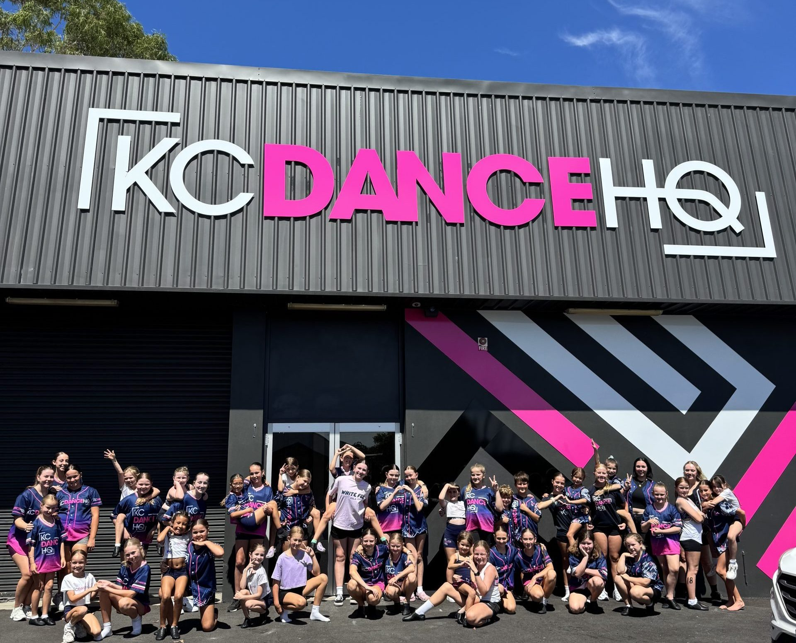
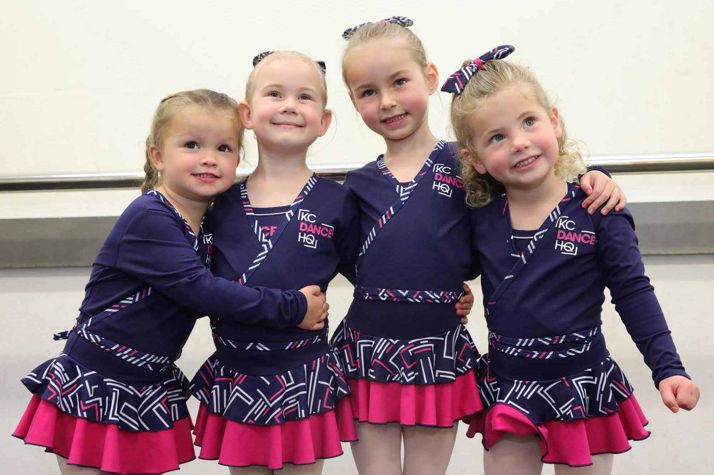
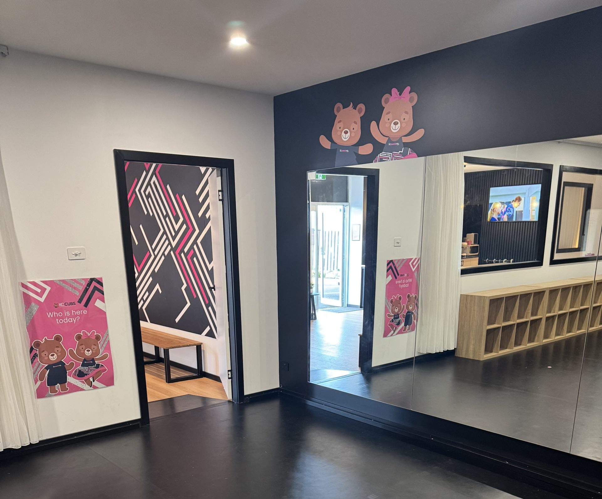

Experienced teachers guide the room.
Dancers still receive thoughtful training, technique and care from a team parents can trust.
KCDanceHQ gives families the professional teaching, structure and care they want, without the competition headaches, travel load and extra costs that do not suit every child.

Families hear the promise clearly: confidence, friendship, kindness, self belief and a genuine love of dance all matter as much as the steps.
Dancers still receive thoughtful training, technique and care from a team parents can trust.
Families can enjoy dance as part of their week without pressure to chase trophies, travel or extra costs.
The studio feels like a second home, not a high-stress performance pipeline.
Video and warm facility imagery help parents feel the friendly studio culture and professional standards before they choose a class.
The class range stays easy to scan while the bigger story stays focused on the friendly studio environment.
Weekly classes that build technique, rhythm and confidence in a positive environment.
Students develop coordination, flexibility and teamwork with safety and encouragement built in.
Adult ballet and tap make dance feel welcoming again, whether you are new or returning.
The teacher area reassures families that friendly does not mean casual. It means structured, experienced and kind.


KCCubs is treated as a distinct programme for little movers aged 2 to 5, while still belonging clearly to the KCDanceHQ family.
See KCCubs
Start with a simple question, request the info pack or view the 2026 class types before choosing the next step.
